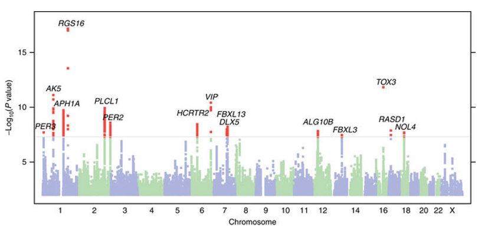

7.1 GWAS for quantitative traits#
In this section we introduce the technique of genome-wide association studies (GWAS), focusing first on quantitative traits. A subsequent section will describe GWAS for case-control traits.
The major goal of GWAS is to identify regions of the genome associated with a particular trait. Since we will be focusing on complex traits, in most cases we will find multiple, sometimes thousands, of trait-associated regions.
7.1.2 GWAS Overview#
The starting point for our GWAS will be a large cohort of samples for which we have both:
Phenotypes: this is the measurement of the trait of interest we are studying. For example, a person’s height.
Genotypes: typically we would be working with genome-wie SNP genotypes (0s, 1s, and 2s), which is the same type of data we worked with in our ancestry module. Genotypes may be obtained either from SNP genotyping arrays or from whole genome sequencing. If genotypes were obtained from arrays, typically there is a round of imputation to impute SNPs that were not directly genotyped. More on that later.
Note, the cohorts collected for GWAS can be massive. Early GWAS cohorts consisted of several thousand individuals. Recent biobanks have hundreds of thousands of samples. The most recent height GWAS had around 5 million individuals! Such large sample sizes are needed to have power to detect variants that have low effect sizes or are not very common in the population. We’ll explore power in a later section.
Once the cohort is collected and undergoes careful quality control to filter problematic samples or variants, the main step of GWAS is to perform an association test for each variant. The results of these tests will point us to the regions of the genome most strongly associated with the trait. The next step gives more details for how this is done.
7.1.3 Association testing for a quantitative trait#
We will perform a separate association test for each SNP. Note, we are implicitly making an assumption here that the effect of each variant is independent of all others and works in an additive fashion.
Let:
\(Y = \{y_1, ... y_n\}\) be the phenotype values for each sample \(1..n\).
\(X_j = \{x_{ij}\}; i=1..n; j=1..m\) be the genotype values for SNP \(j\). \(x_{ij}\) denotes the genotype (0, 1, or 2 copies of the alternate allele) for sample \(i\) at SNP \(j\).
We will test for association between SNP \(j\) and the phenotype using the following linear regression model:
where:
\(\alpha_j\) is an intercept term. We will mostly ignore this.
\(\beta_j\) is the effect of SNP \(X_j\). It can be interpreted as the change in phenotype with each additional copy of the alternate allele.
\(\epsilon_j\) is the noise term. Typically \(\epsilon_j\) is drawn from a multivariate normal distribution \(\epsilon_j \sim N(0, \sigma_g^2 I)\). That is, each individual’s \(\epsilon_{ij}\) is drawn from a normal distribution with mean 0 and variance \(\sigma^2_g\). Because the off-diagonal elements of \(\sigma^2_g I\) are 0, we are not modeling any covariance between the error terms of different individuals (this will change when we talk about linear mixed models later).
We can run a simple least squares linear regression to estimate the following key quantities for each SNP:
\(\hat{\beta_j}\): the estimate of the effect size in the model above
\(p_j\): the p-value for SNP \(j\), testing the null hypothesis that the SNP’s effect size is 0. We explore p-values in more detail in section 7.3.
The quantities above (effect size, pvalue) are referred to as summary statistics. Unlike individual level data, which is often under access control due to privacy and other concerns, summary statistics in most cases can be freely published and shared.
7.1.4 Visualizing GWAS results#
Once summary statistics are obtained for each SNP, we can use several strategies to visualize them.
The plot below is a Manhattan plot. Each dot in the plot represents a single SNP that was tested. The x-axis gives the chromosome position. The y-axis gives the \(-\log_{10}\) p-value of the SNP. Note, we use \(-\log_{10}\) instead of the raw p-value since this emphasizes the most significant (lowest) p-values, which are the ones we are most interested in.
 Source: Hu et al Nature Communications 2016 (“Are you a morning person”?)
We can notice an interesting pattern in the plot above: we often see “skyscrapers” of many strongly trait-associated SNPs nearby to each other, which inspired the name of Manhattan plot. This pattern is driven by the fact that SNPs that are nearby tend to be in linkage disequilibrium (LD), and thus genotypes from nearby SNPs will be correlated with each other. If one SNP is causal for a trait, then it will be associated with the trait, but its LD partners will also be. An important conclusion that we can draw from this is that many trait-associated variants are unlikely to be causal themselves, but rather are just correlated with something else that is causal.
At the end of the day, each of these skyscrapers represents some underlying biological story for how genetic variation impacts a phenotype. When we discuss fine-mapping, we will explore the challenge of identifying the truly causal variants and extracting biological insights from these (it’s hard!). For now, we will focus on other insights we can get from the association statistics themselves, which we will eventually use to build models to predict phenotypes from genotypes.
7.1.5 GWAS significance threshold#
In GWAS, we are often testing millions of SNPs for association with a trait. Therefore we cannot use widely used p-value thresholds like \(p<0.01\) or \(p<0.05\) to determine which are significant. If we test 5 million SNPs, tens of thousands of them would pass a nominal significance threshold just by chance. We have to adjust for the fact that we performed many hypothesis tests to choose a more appropriate significance threshold.
A common method to control for multiple hypothesis testing is Bonferroni correction. The method is simple: if we performed \(m\) tests, and we want a significance level of \(p<0.01\), we should only reject the null hypothesis for tests at which their p-value was \(<0.01/m\).
However, adjusting by the total number of SNPs would be quite stringent. Since many of them are highly correlated (in strong LD), we would be over-correcting (imaging 5 SNPs which are in perfect LD. this represents effectively one test but we would count it 5 times).
It turns out there are around 1 million independent LD blocks in the human genome (this is why SNP genotyping arrays can genotype around only a million SNPs, since the rest can be imputed from those). So if we want a significance threshold of 0.05 Bonferroni-corrected for the effective number of independent tests, we end up with \(0.05/1000000 = 5\times10^{-8}\)
This value, \(p<5\times10^{-8}\), is a widely used genome-wide significance threshold applied as standard practice in GWAS.
7.1.6 More on GWAS QC#
Although we will not discuss it in detail in this course, a critical component to performing GWAS on real data is to do careful quality control and filtering of the data to ensure the phenotypes and genotypes are high quality and reduce the chance of false positive/negative signals. Some important QC steps include:
Sample-level QC: e.g. removing related individuals, removing individuals with high rates of heterozygous genotypes indicating contamination, removing individuals with high rates of missing genotypes
Variant-level QC: e.g. removing SNPs whose genotype do not follow expectation from Hardy-Weinberg Equilibrium, removing SNPs with high missingness rates or low minor allele frequencies
Call-level QC: e.g. removing calls with low imputation or genotype quality scores.